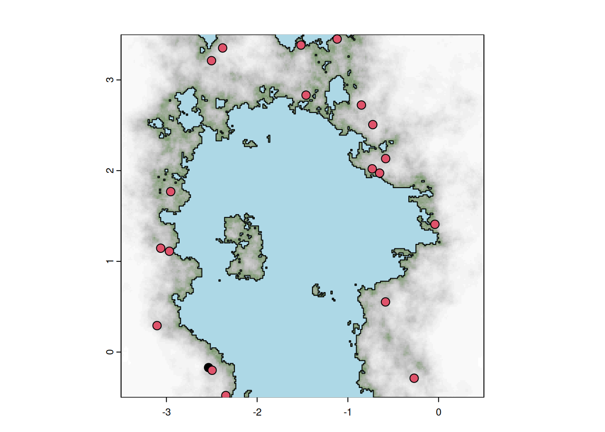
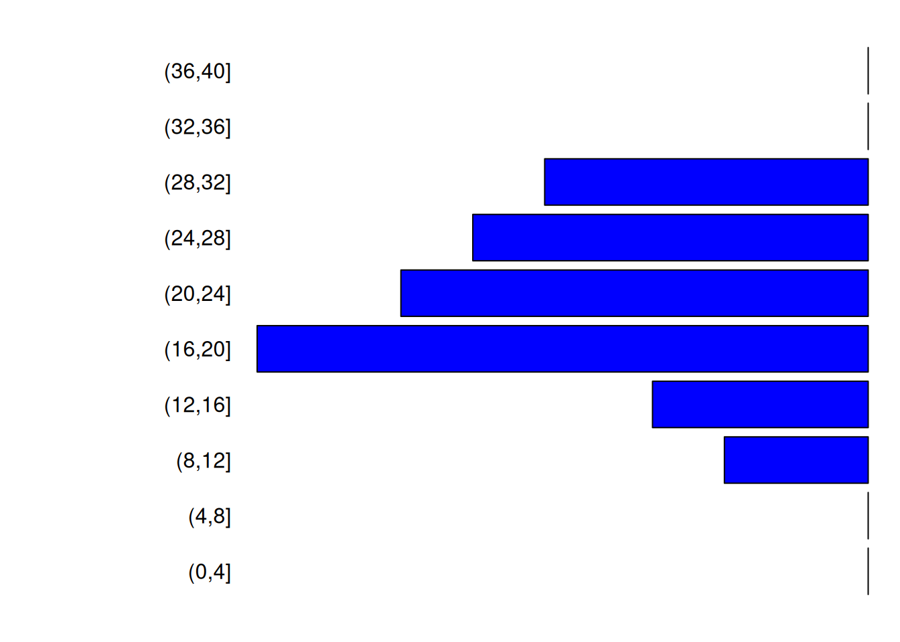
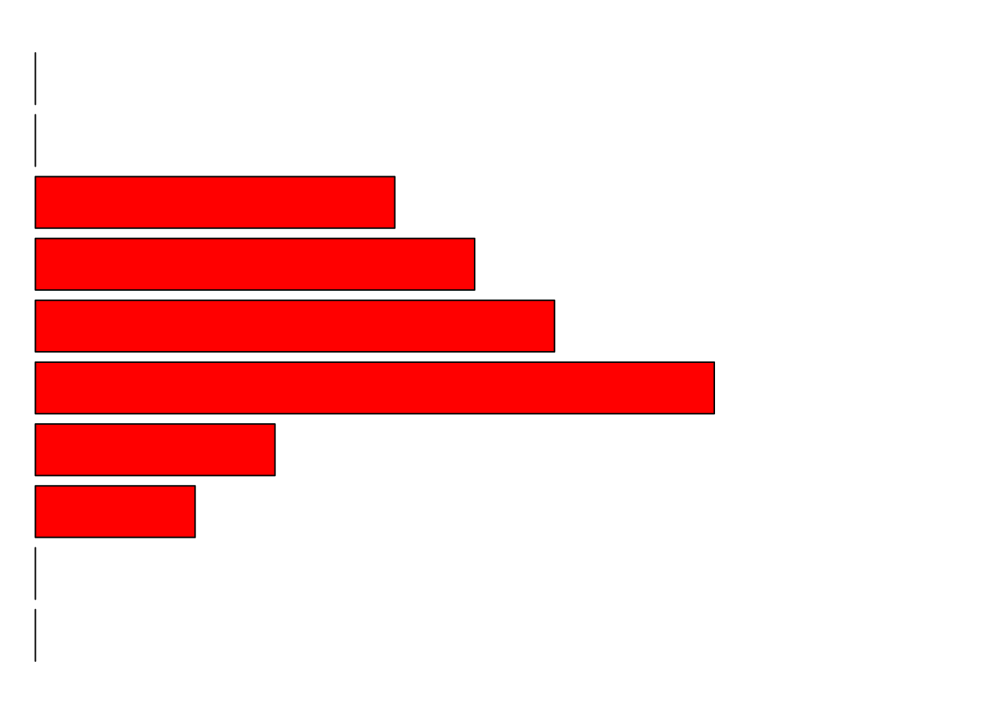
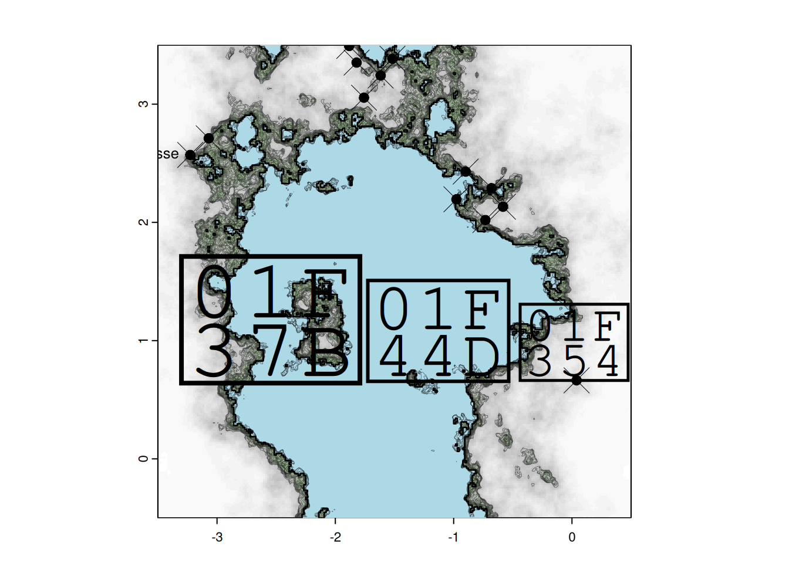

3 Population growth on multiple sites
Population will then grow, for years, and years. This implies multiple things: they need ressources, and we need to define a way for them to grow.
3.1 Environmental resources
We will generate zones of high resources, that will attract settlements and support higher K.
The resources will be located at given hotspots with an area around in which they decay
with a logistic function. We provide a very basic function logisticdecay which allow to define multiple source with different decay array around them.
| logisticdecay | R Documentation |
Logistic decay
Description
Given a raster and a vector of points, set resources hotspots with a logistic decay around them
Usage
logisticdecay(pt, rast, L = 1, k = 1e-04, x0 = 60000)
Arguments
pt |
a vector points around witch decay is computed |
rast |
a raster to compute distances |
L |
starting point of decay |
k |
a vector of decay rates |
x0 |
areas around |
Value
Logistic decay vector
Show code
Code
For the archaeoriddle, thes hotspots and there radius were manually selected given the topography. These manual setups are given below:
##resource geolocalisation set manually
goodresources <- vect(
cbind(
x=c(-0.2300711, -3.1455282, -0.5086485, -1.9639755,
-0.4077843, 0.019688, -3.116710),
y=c(3.6423000, -0.2551019, -0.7440748, 1.1303214,
1.0248567, 0.2194895, 2.0267718)
)
)
#spread of resources
areas <- 4 * c(100, 2000, 200, 300, 100, 200, 400)
#speed of ressource decay:
ks <- c(0.0002, 0.0001000, 0.0001600, 0.0001800, 0.00040, .0002, 0.0002)/4
crs(goodresources) <- crs(original.ras)The function logisticdecay generates individual rasters for all the identified hotspots, which are then merged to create an aggregate raster referred to as ‘resources’.
When considering the selection of hotspots, one may choose to retain the one utilized for the archaeoriddle, although its center may be positioned in water based on the preceding generation outcome. Choosing them manual remains the best option, one can use locator() to find the coordinates of the hotspot by click on the raster, an example of that is given at the end of this chapter
allres <- lapply(
seq_along(goodresources),
function(i){
logisticdecay(goodresources[i], mask(height.ras, viable),
x=areas[i], k=ks[i]
)
}
)
## |---------|---------|---------|---------|========================================= |---------|---------|---------|---------|========================================= |---------|---------|---------|---------|========================================= |---------|---------|---------|---------|========================================= |---------|---------|---------|---------|========================================= |---------|---------|---------|---------|========================================= |---------|---------|---------|---------|=========================================
allna <- sapply(allres, function(i)any(is.na(values(i))))
allres <- allres[!allna]
ress <- allres[[1]]
for(i in 2:length(allres))
ress <- ress + allres[[i]]
ress <- mask(ress,viable)
plot(ress)
This is also something that will be share with participants and thus will be saved in the folder with the DEM and the coastline.
3.2 Initializing Site Size and Culture:
We now have resources available to help us determine the size of each site. For each site, we will designate them as either belonging to the hunter-gather (HG) or farmer (F) culture .
Initially, all sites will be designated as hunter-gatherer sites, except for the one located in the most southwest position. Please note that this decision was based on specific shape of the initial archaeoriddle’s challenge. If needed, you may manually select the site culture for this specific location.
cultures <- rep("HG",length(sites))
sw <- which.min(sqrt((crds(sites)[,"x"] - min(crds(sites)[,"x"]))^2 + (crds(sites)[,"y"] - min(crds(sites)[,"y"]))^2))
cultures[sw]="F"
sites$culture <- cultures
plotMap(height.ras,height.wat)
points(crds(sites),bg=as.factor(cultures),pch=21,cex=1.3)
The each site will then be assigned a carrying capacity (how many people can leave on the site), defined using the ressource raster and the culture.
Kbase <- c("HG"=45,"F"=120) #difference in base-K for the two cultures
# The base Ks are then modulated given the ressource raster
sites$Ks <- initKs(Kbase, sites, ress, sizeexp="F")Using these carrying capacities, we then set initial number of people, and the population structure for each sites:
# Optionally we can intialize here our list of sites and population structures
# Otherwise, they are initialized within the run_simulation function
# Population size at initialisation, a number close to Ks
INs <- round(runif(length(sites), 0.85, 0.95)*sites$Ks)
# initialise population structure for all sites
Ips <- lapply(INs, initpopstruc)
ts <- 150
# We put the population structure across the years in a matrix: each row will represent a time step of the simulation ; each column a sites
Nts <- initlistsites(Ips, ts=ts)We can look at the population structure of the biggest site:
biggest <- which.max(INs)
pop.biggest <- Ips[[biggest]]
poplist=sapply(c(F="F",M="M"),function(s)table(cut(pop.biggest[pop.biggest[,2]==s,1],breaks=seq(0,40,4))))
par(mar=c(1,10,1,1))
barplot(-poplist[,1],beside=T,horiz=T,col=c("blue"),axes=F,las=1)
par(mar=c(1,1,1,10))
barplot(unname(poplist[,1]),beside=T,horiz=T,col=c("red"),axes=F)
You can see the code ofinitKs, initpopstruct and initlistsites functions here:
Show code
Code
## Function 14. Initial carrying capacity
initKs <- function(Kbase=c("HG"=30,"F"=120), sites, ressources,
sizeexp=NULL, rate=.5){
Ks <- round(Kbase[sites$culture] + rnorm(length(sites), 0, 10))
while(any(Ks<1)){
Ks <- round( Kbase[sites$culture] + rnorm(length(sites), 0, 10) )
}
#Ks[sites$culture=="F"]=Ks[sites$culture=="F"]*runif(sum(sites$culture=="F"),1,1)
tmp <- Ks * (1 + extract(ressources, sites)[, 2])
if(!is.null(sizeexp)){
tmp[sites$culture==sizeexp] <- (
(Ks[sites$culture==sizeexp]) *
(1 + rexp(sum(sites$culture==sizeexp), rate=rate) * extract(ressources, sites[sites$culture==sizeexp])[,2])
)
}
tmp
}
## Function 15. Create population matrix
initpopstruc <- function(n=100, ages=10:30, p_sex=c(0.5, 0.5)){
initpop = data.frame(
"Age" = sample(ages, n, ages, replace = TRUE),
"Sex" = sample(c("M", "F"), n, prob = p_sex, replace = TRUE))
return(initpop)
}
## Function 16. Initialize initial list of sites
initlistsites <- function(list_sites, ts=200){
Nts <- matrix(0, nrow=ts+1, ncol=length(list_sites))
Nts[1,] <- sapply(list_sites, nrow)
return(Nts)
}We now have sites with two cultures. The grow of the sites will depend on a lot of paparemeters; which are all a bit different depending on the two cultures. The list of parameters used is deined below:
#initialisation
Kbase=c("HG"=45,"F"=120) #difference in K for the two cultures use and defined before ; will be use in simulation to define new site
# spatial penality for cultural extentions, ie for population to move out of initial site : lower, bigger penality
cul_ext <- c("HG"=7, "F"=6)
# penality of occupational area ie how hard it is to come close to your site ; if low, other sites can come close
penal_cul <- c("HG"=4, "F"=5)
# proba to give birth every year
prob_birth <- c("HG"=0.3, "F"=0.5)
# proba to die when pop > K
prob_survive <- c("HG"=0.8, "F"=0.6)
# proba to create new settlement when Ne > K
prob_split <- c("HG"=0.2, "F"=0.6)
# how big the group of migrant should be to create a new city vs
# migrate to a existing one
minimals <- c("HG"=0.14, "F"=0.20)
# prob to migrate to existing settlement when Ne > K
prob_move <- c("HG"=0.2,"F"=0.1)Let’s see our raster map again, and put the sites on top, with their ids and showing there initial population size:
plotMap(height.ras,height.wat,paste0("year ", 0))
plot(sites, pch=21, add=T, bg=rainbow(2, alpha=0.6)[as.factor(sites$culture)],cex=(1+Nts[1,]/100))
text(sites,pos=3)
The run_simulation function will take the raster data and parameters for defined before for the two different cultures and run for the specified number of years ts (150).
| run_simulation | R Documentation |
Run simulation
Description
This function runs a stochastic simulation in which different cultures positioned in sites in a raster interact, grow, die, fight, migrate,...
Usage
run_simulation(
cultures = NULL,
viable = viable,
sites = sites,
dem = height.ras,
ressources = ress,
water = height.wat,
foldervid = "pathtofinal",
visu = FALSE,
visumin = TRUE,
ts = 20000,
Kbase = c(HG = 35, F = 120),
cul_ext = c(HG = 7, F = 6),
penal_cul = c(HG = 4, F = 5),
prob_birth = c(HG = 0.3, F = 0.5),
prob_survive = c(HG = 0.8, F = 0.6),
prob_split = c(HG = 0.2, F = 0.6),
prob_move = c(HG = 0.2, F = 0.1),
minimals = c(HG = 0.14, F = 0.2),
bufferatack = 400,
buffersettl = 2000,
Nts = NULL,
Ips = NULL
)
Arguments
cultures |
Vector of cultures to be simulated. Default is |
viable |
Viable SpatVector of the territory |
sites |
SpatVector of sites |
dem |
Digital Elevation Model SpatRaster of the map |
ressources |
SpatVector with resources position |
water |
SpatRaster with water |
foldervid |
If |
visu |
logical; whether to plot simulation snaps |
visumin |
logical; whether to plot a minimal visualization of the simulation |
ts |
Length of the simulation in years |
Kbase |
Named vector with carrying capacities for the cultures |
cul_ext |
Named vector. Spatial penalty to extent: lower, bigger penality |
penal_cul |
Named vector. Penality of occupational area: if low, other sites can come close |
prob_birth |
Named vector. Probability of giving birth every year |
prob_survive |
Named vector. Probability of dying when the pop size is greater than the carrying capacity |
prob_split |
Named vector. Probability of creating a new split settlement when the pop size is greater than the carrying capacity |
prob_move |
Probability of migrating to a existing settlement when Ne > K |
minimals |
Named vector. How big, proportionally, the group of migrants should be to create a new city vs migrate to a existing one. |
bufferatack |
Maximum distance around which a settlement can fight |
buffersettl |
Minimum distance around a site in which a new settlement cannnot settle |
Nts |
Initiallized list of sites. Created with initlistsites.
Default is |
Ips |
Initial population structure. Created with initpopstruc.
Default is |
Value
A list with site data across the simulation period, population structures, war casualties and updated sites positions.
It uses a number of other functions to model contacts between sites, the outcomes of fights and migrations
| whotouch | R Documentation |
Check sites touching
Description
Check who's touching a given site
Usage
whotouch(i, sites, Ne, homophily = F, buffersize = 200)
Arguments
i |
Index of the site checked |
sites |
Raster with site coordinates, cultures and carrying capacities |
Ne |
population size of all sites |
homophily |
if true, return all sites that touch (even same culture) |
buffersize |
Buffer size around a given site to consider contacts. It's a factor that multiplies the population size Ne |
Value
Returns a raster with the sites that are touching site i
| fightbetterloss | R Documentation |
Model fight with better probabilities
Description
A function to compute lost during a fighting. The winner and looser are decided probabilistically from their relative size. It then uses a binomial to model the loss of population sizes, with probability based on their relative sizes.
Usage
fightbetterloss(Ne, a, b)
Arguments
Ne |
list of population sizes for the fighting settlement |
a |
indice of the first settlement |
b |
indice of the second settlement |
Value
Returns the updated population size of both settlements engaged in the fight
| changePopSize | R Documentation |
Change population sizes
Description
It changes population sizes due to killing or swap between a loosing and winning population
Usage
changePopSize(
loosingPop,
size,
winingPop = NULL,
new = F,
method = "random",
probs = dnorm,
prob.option = list(sd = 10, mean = 22)
)
Arguments
loosingPop |
data.frame of the population that's decreasing |
size |
Number of deaths or size of the population swap |
winingPop |
data.frame of the population that's increasing |
new |
Deprecated |
method |
Currently only supports "random" |
probs |
Density distribution function to calculate probabilities of individuals to be sampled based on age |
prob.option |
Options for probs functions (e.g. |
Value
Either the updated loosing population data.frame or a list with both the winning and loosing populations
| warpoints | R Documentation |
Draw a war symbol where two clans are fighting
Description
Draws a war symbol in the sites raster at the point of intersection between fighting clans
Usage
warpoints(sites, a, b, Ne, buffersize = 300, plot = T, sizewar = 2)
Arguments
sites |
Raster with site coordinates, cultures and carrying capacities |
a |
Index of first settlement |
b |
Index of second settlement |
Ne |
Population sizes list |
buffersize |
buffer size around a given site to consider contacts. It's a factor that multiplies the population size Ne |
plot |
Whether to make a plot or not |
sizewar |
Size of the war symbol |
Value
Raster of the intersection point between sites a and b, if any.
onesimu <- run_simulation(
sites=sites, viable=viable, dem=height.ras,
ressources=ress,
water=height.wat,
foldervid="nan",
visu=F, visumin=F,
ts=ts, #length of simulation in year
Kbase=c("HG"=35, "F"=110), #difference in K for the two cultures
cul_ext=c("HG"=7, "F"=6), #spatial penality to extent: lower, bigger penality
penal_cul=c("HG"=4, "F"=5), #penality of occupational area: low, other sites can cam close
prob_birth=c("HG"=0.3, "F"=0.5), #proba of giving birth every year
prob_survive=c("HG"=0.8, "F"=0.65), #proba of dying when pop > K
prob_split=c("HG"=0.5, "F"=0.6), #proba of creating a new settlement when Ne > K
minimals=c("HG"=0.14,"F"=0.20), #how big the group of migrant should be to create a new city vs migrate to a existing one
bufferatack=300, #distance max around which settlement can fight
prob_move=c("HG"=0.2, "F"=0.1) #proba of migrating to existing settlement when Ne > K
)
## [1] "year 2 total 987 with 20 sites ( F:1,HG:19 )"
## [1] "year 3 total 1074 with 20 sites ( F:1,HG:19 )"
## |---------|---------|---------|---------|========================================= [1] "7 migrant from HG to HG"
## |---------|---------|---------|---------|========================================= |---------|---------|---------|---------|========================================= [1] "new settlement (HG) of K 27 and pop 7"
## [1] "year 4 total 1112 with 21 sites ( F:1,HG:20 )"
## |---------|---------|---------|---------|========================================= [1] "7 migrant from HG to HG"
## |---------|---------|---------|---------|========================================= [1] "7 migrant from HG to HG"
## [1] "year 5 total 1123 with 21 sites ( F:1,HG:20 )"
## |---------|---------|---------|---------|========================================= [1] "5 migrant from HG to HG"
## |---------|---------|---------|---------|========================================= [1] "19 migrant from F to F"
## |---------|---------|---------|---------|========================================= |---------|---------|---------|---------|========================================= [1] "new settlement (HG) of K 44 and pop 12"
## |---------|---------|---------|---------|========================================= [1] "6 migrant from HG to HG"
## |---------|---------|---------|---------|========================================= |---------|---------|---------|---------|========================================= [1] "new settlement (HG) of K 29 and pop 8"
## [1] "year 6 total 1152 with 23 sites ( F:1,HG:22 )"
## |---------|---------|---------|---------|========================================= [1] "26 migrant from F to F"
## |---------|---------|---------|---------|========================================= [1] "8 migrant from HG to HG"
## [1] "year 7 total 1173 with 23 sites ( F:1,HG:22 )"
## |---------|---------|---------|---------|========================================= |---------|---------|---------|---------|========================================= [1] "new settlement (F) of K 109 and pop 31"
## |---------|---------|---------|---------|========================================= [1] "5 migrant from HG to HG"
## |---------|---------|---------|---------|========================================= |---------|---------|---------|---------|========================================= [1] "new settlement (HG) of K 32 and pop 9"
## |---------|---------|---------|---------|========================================= |---------|---------|---------|---------|========================================= [1] "new settlement (HG) of K 29 and pop 10"
## [1] "year 8 total 1204 with 26 sites ( F:2,HG:24 )"
## |---------|---------|---------|---------|========================================= [1] "8 migrant from HG to HG"
## |---------|---------|---------|---------|========================================= [1] "5 migrant from HG to HG"
## [1] "year 9 total 1238 with 26 sites ( F:2,HG:24 )"
## |---------|---------|---------|---------|========================================= |---------|---------|---------|---------|========================================= [1] "new settlement (HG) of K 22 and pop 7"
## |---------|---------|---------|---------|========================================= [1] "5 migrant from HG to HG"
## [1] "year 10 total 1248 with 27 sites ( F:2,HG:25 )"
## [1] "year 11 total 1281 with 27 sites ( F:2,HG:25 )"
## [1] "year 12 total 1292 with 27 sites ( F:2,HG:25 )"
## |---------|---------|---------|---------|========================================= [1] "5 migrant from HG to HG"
## |---------|---------|---------|---------|========================================= |---------|---------|---------|---------|========================================= [1] "new settlement (HG) of K 49 and pop 10"
## [1] "year 13 total 1308 with 28 sites ( F:2,HG:26 )"
## |---------|---------|---------|---------|========================================= [1] "7 migrant from HG to HG"
## |---------|---------|---------|---------|========================================= [1] "5 migrant from HG to HG"
## |---------|---------|---------|---------|========================================= [1] "8 migrant from HG to HG"
## [1] "year 14 total 1310 with 28 sites ( F:2,HG:26 )"
## [1] "year 15 total 1340 with 28 sites ( F:2,HG:26 )"
## |---------|---------|---------|---------|========================================= [1] "6 migrant from HG to HG"
## |---------|---------|---------|---------|========================================= [1] "7 migrant from HG to HG"
## |---------|---------|---------|---------|========================================= [1] "6 migrant from HG to HG"
## |---------|---------|---------|---------|========================================= |---------|---------|---------|---------|========================================= [1] "new settlement (HG) of K 36 and pop 6"
## [1] "year 16 total 1379 with 29 sites ( F:2,HG:27 )"
## |---------|---------|---------|---------|========================================= [1] "5 migrant from HG to HG"
## |---------|---------|---------|---------|========================================= [1] "3 migrant from HG to HG"
## [1] "year 17 total 1381 with 29 sites ( F:2,HG:27 )"
## |---------|---------|---------|---------|========================================= [1] "3 migrant from HG to HG"
## |---------|---------|---------|---------|========================================= |---------|---------|---------|---------|========================================= [1] "new settlement (HG) of K 54 and pop 6"
## |---------|---------|---------|---------|========================================= [1] "4 migrant from HG to HG"
## [1] "year 18 total 1390 with 30 sites ( F:2,HG:28 )"
## |---------|---------|---------|---------|========================================= [1] "3 migrant from HG to HG"
## [1] "year 19 total 1390 with 30 sites ( F:2,HG:28 )"
## |---------|---------|---------|---------|========================================= [1] "5 migrant from HG to HG"
## [1] "year 20 total 1371 with 30 sites ( F:2,HG:28 )"
## |---------|---------|---------|---------|========================================= [1] "7 migrant from HG to HG"
## [1] "year 21 total 1372 with 30 sites ( F:2,HG:28 )"
## [1] "year 22 total 1347 with 30 sites ( F:2,HG:28 )"
## |---------|---------|---------|---------|========================================= [1] "5 migrant from HG to HG"
## [1] "year 23 total 1351 with 30 sites ( F:2,HG:28 )"
## |---------|---------|---------|---------|========================================= [1] "2 migrant from HG to HG"
## |---------|---------|---------|---------|========================================= [1] "11 migrant from F to F"
## |---------|---------|---------|---------|========================================= [1] "3 migrant from HG to HG"
## [1] "year 24 total 1339 with 30 sites ( F:2,HG:28 )"
## [1] "year 25 total 1340 with 30 sites ( F:2,HG:28 )"
## [1] "year 26 total 1314 with 30 sites ( F:2,HG:28 )"
## [1] "year 27 total 1333 with 30 sites ( F:2,HG:28 )"
## [1] "year 28 total 1331 with 30 sites ( F:2,HG:28 )"
## |---------|---------|---------|---------|========================================= [1] "5 migrant from HG to HG"
## |---------|---------|---------|---------|========================================= [1] "4 migrant from HG to HG"
## |---------|---------|---------|---------|========================================= [1] "20 migrant from F to F"
## [1] "year 29 total 1339 with 30 sites ( F:2,HG:28 )"
## [1] "year 30 total 1316 with 30 sites ( F:2,HG:28 )"
## |---------|---------|---------|---------|========================================= [1] "3 migrant from HG to HG"
## [1] "year 31 total 1310 with 30 sites ( F:2,HG:28 )"
## |---------|---------|---------|---------|========================================= [1] "5 migrant from HG to HG"
## |---------|---------|---------|---------|========================================= [1] "14 migrant from F to F"
## [1] "year 32 total 1324 with 30 sites ( F:2,HG:28 )"
## [1] "year 33 total 1344 with 30 sites ( F:2,HG:28 )"
## [1] "year 34 total 1348 with 30 sites ( F:2,HG:28 )"
## [1] "year 35 total 1338 with 30 sites ( F:2,HG:28 )"
## [1] "year 36 total 1343 with 30 sites ( F:2,HG:28 )"
## |---------|---------|---------|---------|========================================= [1] "18 migrant from F to F"
## |---------|---------|---------|---------|========================================= |---------|---------|---------|---------|========================================= [1] "new settlement (HG) of K 32 and pop 9"
## |---------|---------|---------|---------|========================================= [1] "5 migrant from HG to HG"
## [1] "year 37 total 1352 with 31 sites ( F:2,HG:29 )"
## |---------|---------|---------|---------|========================================= [1] "3 migrant from HG to HG"
## [1] "year 38 total 1335 with 31 sites ( F:2,HG:29 )"
## |---------|---------|---------|---------|========================================= [1] "4 migrant from HG to HG"
## [1] "year 39 total 1348 with 31 sites ( F:2,HG:29 )"
## [1] "year 40 total 1353 with 31 sites ( F:2,HG:29 )"
## [1] "year 41 total 1365 with 31 sites ( F:2,HG:29 )"
## |---------|---------|---------|---------|========================================= [1] "13 migrant from F to F"
## [1] "year 42 total 1353 with 31 sites ( F:2,HG:29 )"
## |---------|---------|---------|---------|========================================= [1] "5 migrant from HG to HG"
## |---------|---------|---------|---------|========================================= [1] "3 migrant from HG to HG"
## [1] "year 43 total 1379 with 31 sites ( F:2,HG:29 )"
## [1] "year 44 total 1377 with 31 sites ( F:2,HG:29 )"
## [1] "year 45 total 1388 with 31 sites ( F:2,HG:29 )"
## [1] "year 46 total 1404 with 31 sites ( F:2,HG:29 )"
## |---------|---------|---------|---------|========================================= [1] "4 migrant from HG to HG"
## |---------|---------|---------|---------|========================================= [1] "6 migrant from HG to HG"
## [1] "year 47 total 1415 with 31 sites ( F:2,HG:29 )"
## |---------|---------|---------|---------|========================================= [1] "13 migrant from F to F"
## [1] "year 48 total 1409 with 31 sites ( F:2,HG:29 )"
## |---------|---------|---------|---------|========================================= [1] "3 migrant from HG to HG"
## [1] "year 49 total 1398 with 31 sites ( F:2,HG:29 )"
## |---------|---------|---------|---------|========================================= [1] "9 migrant from HG to HG"
## [1] "year 50 total 1418 with 31 sites ( F:2,HG:29 )"
## |---------|---------|---------|---------|========================================= [1] "7 migrant from HG to HG"
## [1] "year 51 total 1414 with 31 sites ( F:2,HG:29 )"
## |---------|---------|---------|---------|========================================= [1] "7 migrant from HG to HG"
## |---------|---------|---------|---------|========================================= [1] "6 migrant from HG to HG"
## [1] "year 52 total 1415 with 31 sites ( F:2,HG:29 )"
## |---------|---------|---------|---------|========================================= |---------|---------|---------|---------|========================================= [1] "new settlement (HG) of K 47 and pop 8"
## |---------|---------|---------|---------|========================================= |---------|---------|---------|---------|========================================= [1] "new settlement (HG) of K 36 and pop 6"
## [1] "year 53 total 1440 with 33 sites ( F:2,HG:31 )"
## [1] "year 54 total 1439 with 33 sites ( F:2,HG:31 )"
## |---------|---------|---------|---------|========================================= [1] "5 migrant from HG to HG"
## |---------|---------|---------|---------|========================================= [1] "6 migrant from HG to HG"
## [1] "year 55 total 1467 with 33 sites ( F:2,HG:31 )"
## |---------|---------|---------|---------|========================================= [1] "2 migrant from HG to HG"
## |---------|---------|---------|---------|========================================= [1] "8 migrant from HG to HG"
## |---------|---------|---------|---------|========================================= |---------|---------|---------|---------|========================================= [1] "new settlement (HG) of K 43 and pop 7"
## |---------|---------|---------|---------|========================================= [1] "11 migrant from F to F"
## [1] "year 56 total 1484 with 34 sites ( F:2,HG:32 )"
## |---------|---------|---------|---------|========================================= [1] "4 migrant from HG to HG"
## [1] "year 57 total 1493 with 34 sites ( F:2,HG:32 )"
## |---------|---------|---------|---------|========================================= [1] "13 migrant from F to F"
## |---------|---------|---------|---------|========================================= [1] "5 migrant from HG to HG"
## |---------|---------|---------|---------|========================================= [1] "7 migrant from HG to HG"
## [1] "year 58 total 1474 with 34 sites ( F:2,HG:32 )"
## |---------|---------|---------|---------|========================================= [1] "7 migrant from HG to HG"
## [1] "year 59 total 1498 with 34 sites ( F:2,HG:32 )"
## |---------|---------|---------|---------|========================================= [1] "16 migrant from F to F"
## [1] "year 60 total 1484 with 34 sites ( F:2,HG:32 )"
## [1] "year 61 total 1463 with 34 sites ( F:2,HG:32 )"
## |---------|---------|---------|---------|========================================= [1] "15 migrant from F to F"
## [1] "year 62 total 1479 with 34 sites ( F:2,HG:32 )"
## [1] "year 63 total 1473 with 34 sites ( F:2,HG:32 )"
## [1] "year 64 total 1486 with 34 sites ( F:2,HG:32 )"
## [1] "year 65 total 1476 with 34 sites ( F:2,HG:32 )"
## [1] "year 66 total 1473 with 34 sites ( F:2,HG:32 )"
## |---------|---------|---------|---------|========================================= |---------|---------|---------|---------|========================================= [1] "new settlement (HG) of K 33 and pop 5"
## |---------|---------|---------|---------|========================================= [1] "3 migrant from HG to HG"
## [1] "year 67 total 1492 with 35 sites ( F:2,HG:33 )"
## |---------|---------|---------|---------|========================================= [1] "7 migrant from HG to HG"
## |---------|---------|---------|---------|========================================= |---------|---------|---------|---------|========================================= [1] "new settlement (HG) of K 39 and pop 12"
## |---------|---------|---------|---------|========================================= [1] "7 migrant from HG to HG"
## [1] "year 68 total 1515 with 36 sites ( F:2,HG:34 )"
## [1] "year 69 total 1528 with 36 sites ( F:2,HG:34 )"
## |---------|---------|---------|---------|========================================= [1] "7 migrant from HG to HG"
## [1] "year 70 total 1534 with 36 sites ( F:2,HG:34 )"
## [1] "year 71 total 1522 with 36 sites ( F:2,HG:34 )"
## |---------|---------|---------|---------|========================================= [1] "5 migrant from HG to HG"
## |---------|---------|---------|---------|========================================= [1] "7 migrant from HG to HG"
## |---------|---------|---------|---------|========================================= [1] "5 migrant from HG to HG"
## [1] "year 72 total 1523 with 36 sites ( F:2,HG:34 )"
## |---------|---------|---------|---------|========================================= [1] "5 migrant from HG to HG"
## |---------|---------|---------|---------|========================================= [1] "7 migrant from HG to HG"
## |---------|---------|---------|---------|========================================= [1] "4 migrant from HG to HG"
## [1] "year 73 total 1523 with 36 sites ( F:2,HG:34 )"
## [1] "year 74 total 1517 with 36 sites ( F:2,HG:34 )"
## |---------|---------|---------|---------|========================================= [1] "5 migrant from HG to HG"
## [1] "year 75 total 1523 with 36 sites ( F:2,HG:34 )"
## |---------|---------|---------|---------|========================================= [1] "3 migrant from HG to HG"
## |---------|---------|---------|---------|========================================= [1] "4 migrant from HG to HG"
## [1] "year 76 total 1531 with 36 sites ( F:2,HG:34 )"
## |---------|---------|---------|---------|========================================= [1] "4 migrant from HG to HG"
## |---------|---------|---------|---------|========================================= [1] "3 migrant from HG to HG"
## |---------|---------|---------|---------|========================================= |---------|---------|---------|---------|========================================= [1] "new settlement (HG) of K 32 and pop 6"
## |---------|---------|---------|---------|========================================= [1] "6 migrant from HG to HG"
## [1] "year 77 total 1531 with 37 sites ( F:2,HG:35 )"
## [1] "year 78 total 1524 with 37 sites ( F:2,HG:35 )"
## |---------|---------|---------|---------|========================================= [1] "5 migrant from HG to HG"
## [1] "year 79 total 1555 with 37 sites ( F:2,HG:35 )"
## |---------|---------|---------|---------|========================================= [1] "5 migrant from HG to HG"
## |---------|---------|---------|---------|========================================= [1] "8 migrant from HG to HG"
## [1] "year 80 total 1576 with 37 sites ( F:2,HG:35 )"
## |---------|---------|---------|---------|========================================= [1] "4 migrant from HG to HG"
## |---------|---------|---------|---------|========================================= |---------|---------|---------|---------|========================================= [1] "new settlement (HG) of K 28 and pop 5"
## [1] "year 81 total 1580 with 38 sites ( F:2,HG:36 )"
## |---------|---------|---------|---------|========================================= [1] "14 migrant from F to F"
## |---------|---------|---------|---------|========================================= [1] "3 migrant from HG to HG"
## [1] "year 82 total 1601 with 38 sites ( F:2,HG:36 )"
## |---------|---------|---------|---------|========================================= |---------|---------|---------|---------|========================================= [1] "new settlement (F) of K 307 and pop 22"
## |---------|---------|---------|---------|========================================= [1] "7 migrant from HG to HG"
## |---------|---------|---------|---------|========================================= [1] "4 migrant from HG to HG"
## |---------|---------|---------|---------|========================================= [1] "7 migrant from HG to HG"
## [1] "year 83 total 1621 with 39 sites ( F:3,HG:36 )"
## |---------|---------|---------|---------|========================================= [1] "8 migrant from HG to HG"
## |---------|---------|---------|---------|========================================= [1] "6 migrant from HG to HG"
## [1] "year 84 total 1635 with 39 sites ( F:3,HG:36 )"
## [1] "year 85 total 1636 with 39 sites ( F:3,HG:36 )"
## |---------|---------|---------|---------|========================================= [1] "6 migrant from HG to HG"
## [1] "year 86 total 1656 with 39 sites ( F:3,HG:36 )"
## |---------|---------|---------|---------|========================================= [1] "4 migrant from HG to HG"
## [1] "year 87 total 1643 with 39 sites ( F:3,HG:36 )"
## [1] "year 88 total 1657 with 39 sites ( F:3,HG:36 )"
## |---------|---------|---------|---------|========================================= [1] "4 migrant from HG to HG"
## [1] "year 89 total 1667 with 39 sites ( F:3,HG:36 )"
## |---------|---------|---------|---------|========================================= [1] "7 migrant from HG to HG"
## |---------|---------|---------|---------|========================================= [1] "2 migrant from HG to HG"
## |---------|---------|---------|---------|========================================= [1] "17 migrant from F to F"
## [1] "year 90 total 1678 with 39 sites ( F:3,HG:36 )"
## |---------|---------|---------|---------|========================================= [1] "4 migrant from HG to HG"
## |---------|---------|---------|---------|========================================= [1] "7 migrant from HG to HG"
## |---------|---------|---------|---------|========================================= [1] "3 migrant from HG to HG"
## [1] "year 91 total 1688 with 39 sites ( F:3,HG:36 )"
## [1] "year 92 total 1696 with 39 sites ( F:3,HG:36 )"
## |---------|---------|---------|---------|========================================= |---------|---------|---------|---------|========================================= [1] "new settlement (HG) of K 48 and pop 7"
## [1] "year 93 total 1720 with 40 sites ( F:3,HG:37 )"
## |---------|---------|---------|---------|========================================= [1] "7 migrant from HG to HG"
## [1] "year 94 total 1753 with 40 sites ( F:3,HG:37 )"
## |---------|---------|---------|---------|========================================= [1] "3 migrant from HG to HG"
## |---------|---------|---------|---------|========================================= [1] "3 migrant from HG to HG"
## |---------|---------|---------|---------|========================================= [1] "4 migrant from HG to HG"
## |---------|---------|---------|---------|========================================= [1] "4 migrant from HG to HG"
## [1] "year 95 total 1792 with 40 sites ( F:3,HG:37 )"
## |---------|---------|---------|---------|========================================= [1] "6 migrant from HG to HG"
## |---------|---------|---------|---------|========================================= [1] "4 migrant from HG to HG"
## [1] "year 96 total 1787 with 40 sites ( F:3,HG:37 )"
## |---------|---------|---------|---------|========================================= [1] "15 migrant from F to F"
## [1] "year 97 total 1783 with 40 sites ( F:3,HG:37 )"
## |---------|---------|---------|---------|========================================= [1] "6 migrant from HG to HG"
## [1] "year 98 total 1776 with 40 sites ( F:3,HG:37 )"
## |---------|---------|---------|---------|========================================= [1] "2 migrant from HG to HG"
## |---------|---------|---------|---------|========================================= [1] "4 migrant from HG to HG"
## [1] "year 99 total 1809 with 40 sites ( F:3,HG:37 )"
## |---------|---------|---------|---------|========================================= [1] "5 migrant from HG to HG"
## [1] "year 100 total 1811 with 40 sites ( F:3,HG:37 )"
## |---------|---------|---------|---------|========================================= [1] "4 migrant from HG to HG"
## |---------|---------|---------|---------|========================================= |---------|---------|---------|---------|========================================= [1] "new settlement (HG) of K 38 and pop 11"
## |---------|---------|---------|---------|========================================= [1] "3 migrant from HG to HG"
## |---------|---------|---------|---------|========================================= [1] "18 migrant from F to F"
## |---------|---------|---------|---------|========================================= [1] "3 migrant from HG to HG"
## |---------|---------|---------|---------|========================================= [1] "6 migrant from HG to HG"
## [1] "year 101 total 1843 with 41 sites ( F:3,HG:38 )"
## |---------|---------|---------|---------|========================================= [1] "5 migrant from HG to HG"
## [1] "year 102 total 1832 with 41 sites ( F:3,HG:38 )"
## |---------|---------|---------|---------|========================================= |---------|---------|---------|---------|========================================= [1] "new settlement (HG) of K 30 and pop 7"
## |---------|---------|---------|---------|========================================= [1] "5 migrant from HG to HG"
## [1] "year 103 total 1879 with 42 sites ( F:3,HG:39 )"
## [1] "year 104 total 1905 with 42 sites ( F:3,HG:39 )"
## |---------|---------|---------|---------|========================================= [1] "2 migrant from HG to HG"
## |---------|---------|---------|---------|========================================= [1] "3 migrant from HG to HG"
## |---------|---------|---------|---------|========================================= [1] "3 migrant from HG to HG"
## |---------|---------|---------|---------|========================================= [1] "7 migrant from HG to HG"
## |---------|---------|---------|---------|========================================= [1] "11 migrant from F to F"
## [1] "year 105 total 1936 with 42 sites ( F:3,HG:39 )"
## [1] "year 106 total 1943 with 42 sites ( F:3,HG:39 )"
## |---------|---------|---------|---------|========================================= [1] "3 migrant from HG to HG"
## |---------|---------|---------|---------|========================================= [1] "4 migrant from HG to HG"
## [1] "year 107 total 1965 with 42 sites ( F:3,HG:39 )"
## |---------|---------|---------|---------|========================================= |---------|---------|---------|---------|========================================= [1] "new settlement (HG) of K 42 and pop 6"
## [1] "year 108 total 1974 with 43 sites ( F:3,HG:40 )"
## [1] "year 109 total 1971 with 43 sites ( F:3,HG:40 )"
## |---------|---------|---------|---------|========================================= [1] "15 migrant from F to F"
## [1] "year 110 total 1988 with 43 sites ( F:3,HG:40 )"
## [1] "year 111 total 2025 with 43 sites ( F:3,HG:40 )"
## |---------|---------|---------|---------|========================================= [1] "5 migrant from HG to HG"
## [1] "year 112 total 2050 with 43 sites ( F:3,HG:40 )"
## |---------|---------|---------|---------|========================================= [1] "3 migrant from HG to HG"
## [1] "year 113 total 2084 with 43 sites ( F:3,HG:40 )"
## |---------|---------|---------|---------|========================================= [1] "3 migrant from HG to HG"
## |---------|---------|---------|---------|========================================= [1] "4 migrant from HG to HG"
## [1] "year 114 total 2097 with 43 sites ( F:3,HG:40 )"
## |---------|---------|---------|---------|========================================= [1] "4 migrant from HG to HG"
## [1] "year 115 total 2085 with 43 sites ( F:3,HG:40 )"
## [1] "year 116 total 2082 with 43 sites ( F:3,HG:40 )"
## [1] "year 117 total 2087 with 43 sites ( F:3,HG:40 )"
## |---------|---------|---------|---------|========================================= [1] "3 migrant from HG to HG"
## |---------|---------|---------|---------|========================================= [1] "5 migrant from HG to HG"
## [1] "year 118 total 2093 with 43 sites ( F:3,HG:40 )"
## [1] "year 119 total 2089 with 43 sites ( F:3,HG:40 )"
## |---------|---------|---------|---------|========================================= [1] "5 migrant from HG to HG"
## |---------|---------|---------|---------|========================================= [1] "3 migrant from HG to HG"
## |---------|---------|---------|---------|========================================= [1] "5 migrant from HG to HG"
## [1] "year 120 total 2096 with 43 sites ( F:3,HG:40 )"
## |---------|---------|---------|---------|========================================= [1] "5 migrant from HG to HG"
## |---------|---------|---------|---------|========================================= |---------|---------|---------|---------|========================================= [1] "new settlement (HG) of K 54 and pop 8"
## [1] "year 121 total 2105 with 44 sites ( F:3,HG:41 )"
## |---------|---------|---------|---------|========================================= [1] "15 migrant from F to F"
## |---------|---------|---------|---------|========================================= [1] "4 migrant from HG to HG"
## [1] "year 122 total 2104 with 44 sites ( F:3,HG:41 )"
## [1] "year 123 total 2098 with 44 sites ( F:3,HG:41 )"
## |---------|---------|---------|---------|========================================= |---------|---------|---------|---------|========================================= [1] "new settlement (HG) of K 25 and pop 8"
## |---------|---------|---------|---------|========================================= [1] "3 migrant from HG to HG"
## |---------|---------|---------|---------|========================================= [1] "5 migrant from HG to HG"
## |---------|---------|---------|---------|========================================= [1] "7 migrant from HG to HG"
## |---------|---------|---------|---------|========================================= [1] "7 migrant from HG to HG"
## [1] "year 124 total 2119 with 45 sites ( F:3,HG:42 )"
## |---------|---------|---------|---------|========================================= |---------|---------|---------|---------|========================================= [1] "new settlement (HG) of K 45 and pop 5"
## |---------|---------|---------|---------|========================================= [1] "5 migrant from HG to HG"
## [1] "year 125 total 2144 with 46 sites ( F:3,HG:43 )"
## [1] "year 126 total 2137 with 46 sites ( F:3,HG:43 )"
## |---------|---------|---------|---------|========================================= |---------|---------|---------|---------|========================================= [1] "new settlement (HG) of K 45 and pop 6"
## |---------|---------|---------|---------|========================================= |---------|---------|---------|---------|========================================= [1] "new settlement (HG) of K 42 and pop 4"
## [1] "year 127 total 2162 with 48 sites ( F:3,HG:45 )"
## |---------|---------|---------|---------|========================================= [1] "3 migrant from HG to HG"
## |---------|---------|---------|---------|========================================= [1] "7 migrant from HG to HG"
## [1] "year 128 total 2164 with 48 sites ( F:3,HG:45 )"
## |---------|---------|---------|---------|========================================= [1] "4 migrant from HG to HG"
## |---------|---------|---------|---------|========================================= [1] "17 migrant from F to F"
## |---------|---------|---------|---------|========================================= [1] "3 migrant from HG to HG"
## |---------|---------|---------|---------|========================================= [1] "4 migrant from HG to HG"
## |---------|---------|---------|---------|========================================= [1] "6 migrant from HG to HG"
## [1] "year 129 total 2165 with 48 sites ( F:3,HG:45 )"
## [1] "year 130 total 2141 with 48 sites ( F:3,HG:45 )"
## [1] "year 131 total 2116 with 48 sites ( F:3,HG:45 )"
## |---------|---------|---------|---------|========================================= [1] "3 migrant from HG to HG"
## |---------|---------|---------|---------|========================================= [1] "5 migrant from HG to HG"
## [1] "year 132 total 2119 with 48 sites ( F:3,HG:45 )"
## |---------|---------|---------|---------|========================================= [1] "4 migrant from HG to HG"
## |---------|---------|---------|---------|========================================= [1] "34 migrant from F to F"
## |---------|---------|---------|---------|========================================= [1] "4 migrant from HG to HG"
## [1] "year 133 total 2110 with 48 sites ( F:3,HG:45 )"
## [1] "year 134 total 2125 with 48 sites ( F:3,HG:45 )"
## |---------|---------|---------|---------|========================================= [1] "5 migrant from HG to HG"
## [1] "year 135 total 2123 with 48 sites ( F:3,HG:45 )"
## |---------|---------|---------|---------|========================================= [1] "19 migrant from F to F"
## [1] "year 136 total 2145 with 48 sites ( F:3,HG:45 )"
## |---------|---------|---------|---------|========================================= [1] "3 migrant from HG to HG"
## [1] "year 137 total 2149 with 48 sites ( F:3,HG:45 )"
## |---------|---------|---------|---------|========================================= [1] "3 migrant from HG to HG"
## [1] "year 138 total 2152 with 48 sites ( F:3,HG:45 )"
## |---------|---------|---------|---------|========================================= [1] "5 migrant from HG to HG"
## |---------|---------|---------|---------|========================================= [1] "4 migrant from HG to HG"
## [1] "year 139 total 2187 with 48 sites ( F:3,HG:45 )"
## |---------|---------|---------|---------|========================================= [1] "5 migrant from HG to HG"
## [1] "year 140 total 2186 with 48 sites ( F:3,HG:45 )"
## [1] "year 141 total 2200 with 48 sites ( F:3,HG:45 )"
## |---------|---------|---------|---------|========================================= [1] "7 migrant from HG to HG"
## |---------|---------|---------|---------|========================================= [1] "3 migrant from HG to HG"
## |---------|---------|---------|---------|========================================= |---------|---------|---------|---------|========================================= [1] "new settlement (HG) of K 34 and pop 5"
## |---------|---------|---------|---------|========================================= [1] "19 migrant from F to F"
## |---------|---------|---------|---------|========================================= [1] "5 migrant from HG to HG"
## |---------|---------|---------|---------|========================================= [1] "3 migrant from HG to HG"
## |---------|---------|---------|---------|========================================= [1] "3 migrant from HG to HG"
## [1] "year 142 total 2204 with 49 sites ( F:3,HG:46 )"
## |---------|---------|---------|---------|========================================= [1] "4 migrant from HG to HG"
## |---------|---------|---------|---------|========================================= [1] "9 migrant from HG to HG"
## [1] "year 143 total 2202 with 49 sites ( F:3,HG:46 )"
## |---------|---------|---------|---------|========================================= [1] "4 migrant from HG to HG"
## [1] "year 144 total 2224 with 49 sites ( F:3,HG:46 )"
## |---------|---------|---------|---------|========================================= [1] "7 migrant from HG to HG"
## |---------|---------|---------|---------|========================================= [1] "2 migrant from HG to HG"
## |---------|---------|---------|---------|========================================= [1] "3 migrant from HG to HG"
## |---------|---------|---------|---------|========================================= [1] "3 migrant from HG to HG"
## [1] "year 145 total 2225 with 49 sites ( F:3,HG:46 )"
## |---------|---------|---------|---------|========================================= [1] "6 migrant from HG to HG"
## [1] "year 146 total 2233 with 49 sites ( F:3,HG:46 )"
## |---------|---------|---------|---------|========================================= [1] "5 migrant from HG to HG"
## |---------|---------|---------|---------|========================================= [1] "6 migrant from HG to HG"
## [1] "year 147 total 2226 with 49 sites ( F:3,HG:46 )"
## |---------|---------|---------|---------|========================================= [1] "3 migrant from HG to HG"
## [1] "year 148 total 2218 with 49 sites ( F:3,HG:46 )"
## |---------|---------|---------|---------|========================================= [1] "4 migrant from HG to HG"
## |---------|---------|---------|---------|========================================= [1] "6 migrant from HG to HG"
## |---------|---------|---------|---------|========================================= [1] "3 migrant from HG to HG"
## |---------|---------|---------|---------|========================================= |---------|---------|---------|---------|========================================= [1] "new settlement (HG) of K 29 and pop 5"
## |---------|---------|---------|---------|========================================= [1] "4 migrant from HG to HG"
## |---------|---------|---------|---------|========================================= [1] "6 migrant from HG to HG"
## [1] "year 149 total 2225 with 50 sites ( F:3,HG:47 )"
## |---------|---------|---------|---------|========================================= [1] "2 migrant from HG to HG"
## |---------|---------|---------|---------|========================================= [1] "5 migrant from HG to HG"
## [1] "year 150 total 2249 with 50 sites ( F:3,HG:47 )"
## |---------|---------|---------|---------|========================================= [1] "4 migrant from HG to HG"
## |---------|---------|---------|---------|========================================= [1] "3 migrant from HG to HG"
## [1] "year 151 total 2253 with 50 sites ( F:3,HG:47 )"
## |---------|---------|---------|---------|========================================= [1] "4 migrant from HG to HG"
## |---------|---------|---------|---------|========================================= [1] "11 migrant from F to F"
## |---------|---------|---------|---------|========================================= |---------|---------|---------|---------|========================================= [1] "new settlement (HG) of K 32 and pop 5"Show code
Code
## Function 17. Change population sizes
changePopSize <- function(loosingPop, size, winingPop=NULL, new=F,
method="random", probs=dnorm,
prob.option=list("sd"=10, "mean"=22)) {
#print(dim(loosingPop))
#if(!is.null(winingPop))
# print(dim(winingPop))
#if(length(size)==0 || size==0)return(data.frame(Age=numeric(),Sex=character()))
if(nrow(loosingPop)==0){
kill <- 0
}else if(method=="random"){
kill <- tryCatch(
sample(x=1:nrow(loosingPop), size=size,
prob=probs(loosingPop$Age, mean=prob.option$mean, sd=prob.option$sd)),
error=function(e){
print(paste0("problem with population replacement for settlement of size:",
nrow(loosingPop), " need to loose ", size));0
}
)
}
#print(paste("diff",nrow(popdistrib)-size,"new",size))
if(!is.null(winingPop)){
winingPop <- rbind(winingPop, loosingPop[kill,])
}
loosingPop <- loosingPop[-kill,]
if(!is.null(winingPop))
return(list(loosingPop, winingPop))
else
return(loosingPop)
}
## Function 18. Check sites touching
whotouch <- function(i, sites, Ne, homophily=F, buffersize=200){
touch <- st_intersects(
st_make_valid(st_as_sf(buffer(sites[i], Ne[i] * buffersize))),
st_make_valid(st_as_sf(buffer(sites, Ne * buffersize))))
if( length(touch) > 0 ){
enemies <- unlist(touch)
if(homophily){
enemies <- enemies[enemies != i]
} else {
enemies <- enemies[sites$culture[enemies] != sites$culture[i]]
}
} else {
enemies <- NA
}
return(enemies)
}
## Function 19. Model a simple fight
simplefight <- function(Ne, a, b){
if(runif(1) < Ne[a] / (Ne[a] + Ne[b])){
v <- a
l <- b
}
else{
v <- b
l <- a
}
# Keep the original pop sizes for reporting outcome
one <- Ne
# Update population sizes using a binomial
Ne[v] <- rbinom(n=1, prob=0.9, size=Ne[v])
Ne[l] <- rbinom(n=1, prob=0.4, size=Ne[l])
print(
paste("victory", v, "(", one[v], "-", Ne[v],") over", l,
"(",one[l],"-",Ne[l],"), total of: ", (one[v]-Ne[v]) + (one[l]-Ne[l]), "people"))
return(Ne)
}
## Function 20. Model fight with better probabilities
fightbetterloss <- function(Ne,a,b){
if( runif(1) < Ne[a]/(Ne[a] + Ne[b]) ){
v <- a
l <- b
}
else{
v <- b
l <- a
}
one <- Ne
Ne[v] <- rbinom(n=1, prob=1 - Ne[l]/(Ne[v] + Ne[l]), size=Ne[v])
Ne[l] <- rbinom(n=1, prob=1 - Ne[v]/(Ne[v] + Ne[l]), size=Ne[l])
print(paste0("victory ", v, "(", one[v], "-", Ne[v],") over ", l,
" (", one[l], "-", Ne[l], "), tot: ", (one[v]-Ne[v]) + (one[l]-Ne[l]), "losses"))
return(Ne)
}
## Function 21. Draw a war symbol where two clans are fighting
warpoints <- function(sites, a, b, Ne, buffersize=300, plot=T, sizewar=2){
meetpoints <- crop(
buffer(sites[a], 1+Ne[a] * buffersize),
buffer(sites[b], 1+Ne[b] * buffersize)
)
if( length(meetpoints)>0 ){
p <- spatSample(meetpoints, 1)
if(plot & length(p)>0){
plot(p, add=T, bg="red", pch="🔥", cex=sizewar,
col=adjustcolor("yellow", 0.1))
plot(p, add=T, bg="yellow", pch="⚔️" ,cex=sizewar)
}
return(p)
}
else return(NULL)
}
## Function 22. Run simulation
run_simulation <- function(cultures=NULL,
viable=NULL,
sites=NULL,
dem=NULL,
ressources=NULL,
water=NULL,
foldervid="pathtofinal",
visu=FALSE,
visumin=TRUE,
ts=20000,
Kbase=c("HG"=35, "F"=120),
cul_ext=c("HG"=7, "F"=6),
penal_cul=c("HG"=4, "F"=5),
prob_birth=c("HG"=0.3, "F"=0.5),
prob_survive=c("HG"=0.8, "F"=0.6),
prob_split=c("HG"= .2, "F"=0.6),
prob_move=c("HG"=0.2, "F"=0.1),
minimals=c("HG"=.14, "F"=.20),
bufferatack=400,
buffersettl=2000,
Nts=NULL,
Ips=NULL
){
## Run stochastic process
Ks <- sites$Ks
cultures <- sites$culture
if(is.null(Nts)){
INs <- round(runif(length(sites), 0.85, 0.95) * sites$Ks) #Population size at initialisation
Ips <- lapply(INs, initpopstruc) #initialise population structure for all sites
Nts <- initlistsites(Ips, ts=ts)
frame <- 0
mint <- 2
} else {##should check and test howto start back a simulation
mint <- nrow(Nts)
frame <- nrow(Nts)
}
### visualisation =====
if(!dir.exists(foldervid) & visu){
dir.create(foldervid)
}
###
warcasualties <- vector("integer", ts)
for (i in 2:(ts+1)){
countcult <- table(sites$culture[Nts[i-1, ] > 0])
if ( length(countcult) != 2 ) {
return(
list(Nts=Nts[,1:i],
warcasualties=warcasualties[1:i],
Ips=Ips,
sites=sites
)
)
}
print(
paste("year", i, "total", sum(sapply(Ips,nrow)),
"with", length(sites), "sites (",
paste0(paste(names(countcult), countcult, sep=":"), collapse=","), ")"))
if (visumin){
### visualisation =====
frame <- frame+1
filename <- sprintf("map_%06d.png", frame)
png(file.path(foldervid,filename), width=800, height=800, pointsize=20)
plotMap(dem, water, paste0("year ",i))
########
}
inactives <- (Nts[i-1,]==0)
for ( s in sample(seq_along(sites)[!inactives]) ){
if ( visu ) {
### visualisation =====
frame <- frame+1
filename <- sprintf("map_%08d.png", frame)
png(file.path(foldervid,filename), width=800, height=800, pointsize=20)
plotMap(dem,water,paste0("year ", i))
########
}
city <- NULL
Ips[[s]] <- Gpd( #compute new population for the sites
Ips[[s]], K = Ks[[s]],
p_offspring = prob_birth[sites$culture[s]],
prob = prob_survive[sites$culture[s]]
)
newN <- nrow(Ips[[s]]) #count population size
if(newN >= (Ks[[s]])){ #if new population is more than carrying capacity: migration scenario
migrants <- newN - round(Ks[[s]]*0.9)
##Creation of new city
new_site <- NULL
#if(sites$culture[s]=="F")print(paste("possib",migrants, (minimals[sites$culture[s]]*sites$Ks[s])))
tmp <- Nts[i-1,]
tmp[Nts[i,] > 0] <- Nts[i, Nts[i,] > 0]
#tmp=tmp+sqrt(sites$Ks)
havemoved <- F
if (migrants >= (minimals[sites$culture[s]]*sites$Ks[s]) & runif(1)<prob_split[sites$culture[s]] ){
#if supopulation > 10 people, 10% chance of creation of a new city
#print(paste("look for new spot for ",migrants, "from site",s,"culture",sites$culture[s]))
#mean of area of influence
infarea <- (sqrt(tmp)+penal_cul[cultures]) * buffersettl
buffersize <- rnorm(length(infarea), infarea, infarea * 0.1)
buffersize[tmp==0] <- 0
territory <- erase(viable, buffer(sites, buffersize))
if( length(territory)>0 ){
#print(paste("found new spot",migrants))
##select a new site given its distance to the old one and the ressourcesource available in ressources
d2 <- logisticdecay(
sites[s], dem, x=20000*cul_ext[sites$culture[s]]
)
w <- (0.7 * d2 + 0.3*ressources) / (0.7*minmax(d2)[2] + 0.3*minmax(ressources)[2])
new_site <- spatSample(
x=mask(
w * logisticdecay(sites[s], dem, k=0.00002,
x=20000*cul_ext[sites$culture[s]]),
territory),
size=1, method="weights", xy=T)[1:2]
new_site <- vect(new_site, geom=c("x","y"))
if ( length(new_site)>0 & all(!is.na(crds(new_site))) ){
##add new site to site listes
##initialise population struc of new site
#print(paste("total sites:",length(Ips)))
#print(paste("dim Nts:",dim(Nts)[2]))
#print(paste("site sf Nts:",length(sites)))
Ips[[length(Ips)+1]] <- initpopstruc(n=migrants) #initialise a fake populaition, will be updated by real migrants later
new_site$culture <- sites$culture[s]
new_site$Ks <- round(initKs(
Kbase, sites=new_site, ressources,
sizeex="F", rate=0.45))
print(paste0("new settlement (", sites$culture[s], ") of K ",
new_site$Ks, " and pop ", migrants))
sites <- rbind(sites, new_site)
Ks[length(Ks)+1] <- new_site$Ks
city <- length(Ips)
Nts <- cbind(Nts, rep(0,ts+1))
Nts[i, city] <- migrants
cultures <- c(cultures, cultures[s])
#print(paste("new site sf Nts:",length(sites)))
#print(paste("new dim Nts:",dim(Nts)[2]))
#print(paste("new total sites:",length(Ips)))
havemoved <- T
}
}
}
## if no creation of new city happen, there is a certain probability that people will move
if( length(new_site)==0 && runif(1) < prob_move[sites$culture[s]] ){
#getj
att <- extract(ressources,sites)[,2]
space <- sites$Ks - (Nts[i-1,] + migrants)
dis <- extract(logisticdecay(sites[s], dem, k=0.00002, x=1), sites)[,2]
attractivity <- att * space * dis
#attractivity=attractivity*(1+10*(sites$culture[s]==sites$culture)) #4 times more likely to go to similar culture
attractivity[s] <- min(attractivity)-1
attractivity <- exp(attractivity)/sum(exp(attractivity))
attractivity[Nts[i-1,]<10] <- 0
attractivity[sites$culture!=sites$culture[s]] <- 0
if(any(is.na(attractivity))){
print(attractivity)
attractivity[is.na(attractivity)] <- 0
}
city <- sample(size=1, x=seq_along(sites), prob=attractivity)
Nts[i,city] <- Nts[i-1,city] + migrants
print(paste(migrants, "migrant from", sites$culture[s],
"to", sites$culture[city]))
havemoved <- T
}
if( havemoved ){
#print(paste("old spot",migrants," for ",nrow(Ips[[s]])))
#print(paste("old new spot",migrants," for ",nrow(Ips[[city]])))
#if(city>length(Ips))print(paste("problem, migrants:",migrants))
#print(paste("the other:",city))
Ips[c(s,city)] <- changePopSize(
loosingPop=Ips[[s]], winingPop=Ips[[city]], size=migrants
)
newN <- newN - migrants
#print(paste("loosing ",newN," vs ",nrow(Ips[[s]])))
#print(paste("wining ",newN," vs ",nrow(Ips[[city]])))
}
}
Nts[i,s] <- newN
if (visu){
###visualisation=========
sitescols <- rep(1,length(sites))
siteslwd <- rep(1,length(sites))
ii=NULL
if(!is.null(city)){
sitescols[s] <- "yellow"
sitescols[city] <- "red"
siteslwd[s] <- 3
siteslwd[city] <- 3
ii <- st_cast(st_combine(st_as_sf(sites[c(s, city)])), "LINESTRING")
}
if (!is.null(ii)){
plot(ii ,add=T)
}
tmp <- Nts[i-1,]
tmp[Nts[i,]>0] <- Nts[i,Nts[i,]>0]
plot(sites, cex=(as.integer(Nts[i,]>0) * 0.3 + Nts[i,]/200),
pch=21, add=T, bg=rainbow(2, alpha=0.6)[as.factor(sites$culture)],
lwd=siteslwd, col=sitescols)
dev.off()
###=======================
}
}
if(visumin){
plot(sites, cex=(as.integer(Nts[i,]>0) * 0.3 + Nts[i,]/200),
pch=21, add=T, bg=rainbow(2, alpha=0.6)[as.factor(sites$culture)])
}
potentialfighters <- which(sites$culture=="F" & Nts[i,]>50)
for (s in sample(x=potentialfighters, size=round(length(potentialfighters)*0.1))){
buff <- bufferatack
potentialvictims <- which(sites$culture !=sites$culture[s] & Nts[i,]>0)
clash <- whotouch(s, sites, Ne=Nts[i,], buffersize=buff)
if(length(clash)>0 && !is.na(clash)){
if(length(clash) == 1){
attack <- clash
} else {
attack <- sample(clash, 1)
}
newns <- fightbetterloss(Ne=Nts[i,], a=s, b=attack)
casualties <- sum(Nts[i, c(s,attack)] - newns[c(s,attack)])
warcasualties[i] <- casualties
sizew <- casualties^2/4000
warpoints(sites, s, attack, Ne=Nts[i,],
buffersize=buff, sizewar=sizew+0.5)
#effectively kill people in population (should be done taking into account age pyramid to be more realistic)
Ips[[s]] <- changePopSize(loosingPop=Ips[[s]],
size=(Nts[i,s] - newns[s]))
Ips[[attack]] <- changePopSize(loosingPop=Ips[[attack]],
size=(Nts[i, attack] - newns[attack]))
Nts[i,] <- newns
print(paste0("fight : #", s, " (",
cultures[s], ") left with ", Nts[i,s],
" (bef:", Nts[i-1,s], ") ind., attacked: #", attack, " (",
cultures[attack], ") left with ", Nts[i,attack],
" (bef:", Nts[i-1,attack],") ind., #death=",casualties))
}
}
if(visumin){
dev.off()
}
}
return(list(Nts=Nts, warcasualties=warcasualties, Ips=Ips, sites=sites))
}The list onesimu contains a few interesting info:
Nts <- onesimu$Nts # population at each timestep
warcasualties <- onesimu$warcasualties #death by war at each time stepUse ressource to adjust the Ks:

We look at the simulation step by stepk Step by step to allow interaction between sites:
## visualise trajectories for each site
i <- ts
plot(1, 1, type="n", xlim=c(0,i), ylim=c(0,max(Nts)), xlab="time", ylab="popsize")
lapply(1:ncol(Nts),
function(j)lines(Nts[,j],col=rainbow(2)[as.factor(sites$culture)[j]])
)
## [[1]]
## NULL
##
## [[2]]
## NULL
##
## [[3]]
## NULL
##
## [[4]]
## NULL
##
## [[5]]
## NULL
##
## [[6]]
## NULL
##
## [[7]]
## NULL
##
## [[8]]
## NULL
##
## [[9]]
## NULL
##
## [[10]]
## NULL
##
## [[11]]
## NULL
##
## [[12]]
## NULL
##
## [[13]]
## NULL
##
## [[14]]
## NULL
##
## [[15]]
## NULL
##
## [[16]]
## NULL
##
## [[17]]
## NULL
##
## [[18]]
## NULL
##
## [[19]]
## NULL
##
## [[20]]
## NULL
##
## [[21]]
## NULL
##
## [[22]]
## NULL
##
## [[23]]
## NULL
##
## [[24]]
## NULL
##
## [[25]]
## NULL
##
## [[26]]
## NULL
##
## [[27]]
## NULL
##
## [[28]]
## NULL
##
## [[29]]
## NULL
##
## [[30]]
## NULL
##
## [[31]]
## NULL
##
## [[32]]
## NULL
##
## [[33]]
## NULL
##
## [[34]]
## NULL
##
## [[35]]
## NULL
##
## [[36]]
## NULL
##
## [[37]]
## NULL
##
## [[38]]
## NULL
##
## [[39]]
## NULL
##
## [[40]]
## NULL
##
## [[41]]
## NULL
##
## [[42]]
## NULL
##
## [[43]]
## NULL
##
## [[44]]
## NULL
##
## [[45]]
## NULL
##
## [[46]]
## NULL
##
## [[47]]
## NULL
##
## [[48]]
## NULL
##
## [[49]]
## NULL
##
## [[50]]
## NULL
##
## [[51]]
## NULLVisualise, Record deposit and loss. for the 5 first sites (see next chapters for A_rates).
alldeposit <- lapply(
1:5,
function(i){
Rec_c(sapply(Nts[,i], A_rates), InitBP = 15000, ts=ts, r=0.2, max_bone_thickness="m")
}
)
maxy <- max(sapply(alldeposit, function(i)max(apply(i,2,sum))))
nill <- lapply(alldeposit, function(depo)barplot(t(depo), col=viridis(ts+1), ylim=c(0,maxy)))


Population by time and culture
plot(1, 1, type="n", xlim=c(0,i), ylim=c(0,max(Nts)),
xlab="time", ylab="popsize")
lapply(1:ncol(Nts),
function(i)lines(Nts[,i], col=rainbow(2)[as.factor(sites$culture)[i]]))
## [[1]]
## NULL
##
## [[2]]
## NULL
##
## [[3]]
## NULL
##
## [[4]]
## NULL
##
## [[5]]
## NULL
##
## [[6]]
## NULL
##
## [[7]]
## NULL
##
## [[8]]
## NULL
##
## [[9]]
## NULL
##
## [[10]]
## NULL
##
## [[11]]
## NULL
##
## [[12]]
## NULL
##
## [[13]]
## NULL
##
## [[14]]
## NULL
##
## [[15]]
## NULL
##
## [[16]]
## NULL
##
## [[17]]
## NULL
##
## [[18]]
## NULL
##
## [[19]]
## NULL
##
## [[20]]
## NULL
##
## [[21]]
## NULL
##
## [[22]]
## NULL
##
## [[23]]
## NULL
##
## [[24]]
## NULL
##
## [[25]]
## NULL
##
## [[26]]
## NULL
##
## [[27]]
## NULL
##
## [[28]]
## NULL
##
## [[29]]
## NULL
##
## [[30]]
## NULL
##
## [[31]]
## NULL
##
## [[32]]
## NULL
##
## [[33]]
## NULL
##
## [[34]]
## NULL
##
## [[35]]
## NULL
##
## [[36]]
## NULL
##
## [[37]]
## NULL
##
## [[38]]
## NULL
##
## [[39]]
## NULL
##
## [[40]]
## NULL
##
## [[41]]
## NULL
##
## [[42]]
## NULL
##
## [[43]]
## NULL
##
## [[44]]
## NULL
##
## [[45]]
## NULL
##
## [[46]]
## NULL
##
## [[47]]
## NULL
##
## [[48]]
## NULL
##
## [[49]]
## NULL
##
## [[50]]
## NULL
##
## [[51]]
## NULL
plot(apply(Nts, 1, sum)[1:i], xlab="time", ylab="popsize")
Exploring some trajectories of the simulations
i <- nrow(Nts) # Get the number of rows in Nts
plot(apply(Nts[1:i, sites$culture=="F",drop=F], 1, sum), col="red", type="l",
lwd=2, ylim=c(0, max(apply(Nts, 1, sum)))) # Plot sum of 'F' culture values
points(apply(Nts[1:i, sites$culture=="HG"], 1, sum),
col="blue", lwd=2, type="l") # Add points for 'HG' culture values
plot(warcasualties[1:(i-1)], lwd=2, col="green", type="h", yaxt="n", ylab="") # Plot war casualties
axis(4) # Add an axis on the right side
par(new=T) # Allow a new plot to be drawn on the existing plot
growF <- apply(Nts[1:(i-1), sites$culture=="F",drop=F], 1, sum) # Sum of 'F' culture values excluding last row
growHG <- apply(Nts[1:(i-1), sites$culture=="HG",drop=F], 1, sum) # Sum of 'HG' culture values excluding last row
plot(growF, col="red", type="l", lwd=2, ylim=c(0, max(growF, growHG))) # Plot growth of 'F' culture
points(growHG, col="blue", lwd=2, type="l") # Add points for growth of 'HG' culture
3.3 Manually Select Ressources
Below some useful code to manually select the resource origins on the map (by clicking on the screen) and explore different decays around them
plotMap(height.ras, height.wat, paste0("year ", 0))
new_site <- vect(as.data.frame(locator()), geom=c("x", "y")) # select point on the sscreep
crs(new_site) <- crs(height.ras)
d2 <- logisticdecay(new_site, height.ras, x=20000) # generate a logistic decay around the point
plot(d2)
w <- (0.7*d2 + 0.3*ress) / (0.7*minmax(d2)[2] + 0.3*minmax(ress)[2])
plot(w)
plot(mask(w*logisticdecay(new_site, height.ras, k=0.00002, x=1), territory))
multisamp <- sapply(
1:1000,
function(i){
spatSample(x=w, size=1, method="weights", xy=T)[1:2]
}
)